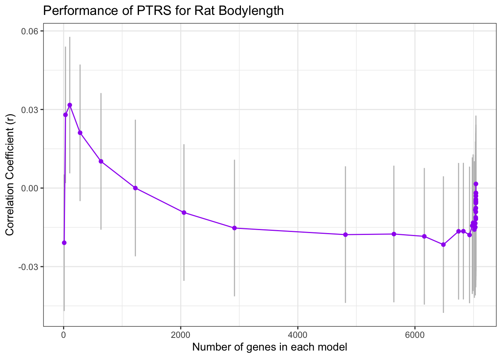

Last updated: 2023-04-04
Checks: 7 0
Knit directory: PTRS-Rat-Analysis/
This reproducible R Markdown analysis was created with workflowr (version 1.7.0). The Checks tab describes the reproducibility checks that were applied when the results were created. The Past versions tab lists the development history.
Great! Since the R Markdown file has been committed to the Git repository, you know the exact version of the code that produced these results.
Great job! The global environment was empty. Objects defined in the global environment can affect the analysis in your R Markdown file in unknown ways. For reproduciblity it’s best to always run the code in an empty environment.
The command set.seed(20230404) was run prior to running
the code in the R Markdown file. Setting a seed ensures that any results
that rely on randomness, e.g. subsampling or permutations, are
reproducible.
Great job! Recording the operating system, R version, and package versions is critical for reproducibility.
Nice! There were no cached chunks for this analysis, so you can be confident that you successfully produced the results during this run.
Great job! Using relative paths to the files within your workflowr project makes it easier to run your code on other machines.
Great! You are using Git for version control. Tracking code development and connecting the code version to the results is critical for reproducibility.
The results in this page were generated with repository version 7dd0181. See the Past versions tab to see a history of the changes made to the R Markdown and HTML files.
Note that you need to be careful to ensure that all relevant files for
the analysis have been committed to Git prior to generating the results
(you can use wflow_publish or
wflow_git_commit). workflowr only checks the R Markdown
file, but you know if there are other scripts or data files that it
depends on. Below is the status of the Git repository when the results
were generated:
Ignored files:
Ignored: .DS_Store
Note that any generated files, e.g. HTML, png, CSS, etc., are not included in this status report because it is ok for generated content to have uncommitted changes.
These are the previous versions of the repository in which changes were
made to the R Markdown (analysis/PTRS_Predict.Rmd) and HTML
(docs/PTRS_Predict.html) files. If you’ve configured a
remote Git repository (see ?wflow_git_remote), click on the
hyperlinks in the table below to view the files as they were in that
past version.
| File | Version | Author | Date | Message |
|---|---|---|---|---|
| Rmd | 7dd0181 | sabrina-mi | 2023-04-04 | migrated box analysis files |
library(tidyverse)── Attaching core tidyverse packages ──────────────────────── tidyverse 2.0.0 ──
✔ dplyr 1.1.1 ✔ readr 2.1.4
✔ forcats 1.0.0 ✔ stringr 1.5.0
✔ ggplot2 3.4.1 ✔ tibble 3.2.1
✔ lubridate 1.9.2 ✔ tidyr 1.3.0
✔ purrr 1.0.1
── Conflicts ────────────────────────────────────────── tidyverse_conflicts() ──
✖ dplyr::filter() masks stats::filter()
✖ dplyr::lag() masks stats::lag()
ℹ Use the ]8;;http://conflicted.r-lib.org/conflicted package]8;; to force all conflicts to become errorslibrary(data.table)
Attaching package: 'data.table'
The following objects are masked from 'package:lubridate':
hour, isoweek, mday, minute, month, quarter, second, wday, week,
yday, year
The following objects are masked from 'package:dplyr':
between, first, last
The following object is masked from 'package:purrr':
transposelibrary(RSQLite)
library(glmnet)Loading required package: Matrix
Attaching package: 'Matrix'
The following objects are masked from 'package:tidyr':
expand, pack, unpack
Loaded glmnet 4.1-6library(data.table)
"%&%" = function(a,b) paste(a,b,sep="")
devtools::source_gist("ee5f67abddd0b761ee24410ea71c41aa")ℹ Sourcing gist "ee5f67abddd0b761ee24410ea71c41aa"
ℹ SHA-1 hash of file is "c56941964697a118c351c3f81322a221fa13a1b3"devtools::source_gist("38431b74c6c0bf90c12f")ℹ Sourcing gist "38431b74c6c0bf90c12f"
ℹ SHA-1 hash of file is "cbeca7fd9bf1602dee41c4f1880cc3a5e8992303"devtools::source_gist("1e9053c8f35c30396429350a08f33ea7")ℹ Sourcing gist "1e9053c8f35c30396429350a08f33ea7"
ℹ SHA-1 hash of file is "7388784ab8c7c2dc5c3f950dc8a47a1c76e3d7ac"traits <- c("height", "bmi")
dir="/Users/sabrinami/Library/CloudStorage/Box-Box/rat-genomic-analysis/PTRS-2023/"
# folder with PrediXcan results
results.dir <- dir %&% "RatXcan/Results/"
# folder with PTRS weights, predicted traits will output here
data.dir <- dir %&%"RatData/"orth.rats <- suppressMessages(read_tsv(dir %&% "RatXcan/ortholog_genes_rats_humans.tsv"))
pred_expr <- suppressMessages(read_tsv(results.dir %&% "Br_EN__predict.txt"))
pred_expr$IID = pred_expr$FID
#filter only for genes that have a human ortholog
pred_expr <- pred_expr %>% select(c(IID, intersect(colnames(pred_expr), orth.rats$rnorvegicus_homolog_ensembl_gene) ))
## workaround, since pred_expr
#change name to human ensembl id in humans
colnames(pred_expr)[2:ncol(pred_expr)] <- orth.rats[match(colnames(pred_expr)[2:ncol(pred_expr)], orth.rats$rnorvegicus_homolog_ensembl_gene), 1] %>% .[["ensembl_gene_id"]]fn_weights = function(trait)
{
weights <- read_tsv(dir %&% "PTRS-models/elastic_net_alpha_0.1_British.export_model/weights." %&% trait %&% ".tsv.gz")
weights$gene_id <- sapply(strsplit(weights$gene_id, "\\."), `[`, 1)
rownames(weights) <- weights$gene_id
weights <- weights %>% rename(gene_name = gene_id)
return(weights)
}for(trait in traits) {
weights <- fn_weights(trait)
pred_trait <- fn_generate_trait(pred_expr, weights)
saveRDS(pred_trait, results.dir %&% "rat_pred_" %&% trait %&% "_w_Human_best_PTRS.RDS")
return(pred_trait)
}pgp_pred_expr <- read_tsv(dir %&% "SPrediXcan/PGP/PGP_Whole_Blood__predict.txt") %>% select(-c(FID))fn_pgp_trait = function(trait)
{
weights <- read_tsv(dir %&% "PTRS-models/elastic_net_alpha_0.1_British.export_model/weights." %&% trait %&% ".tsv.gz") %>% rename(gene_name = gene_id)
# load phenotype data
db <- "/Users/sabrinami/Library/CloudStorage/Box-Box/imlab-data/data-Github/web-data/2021-04-21-personal-genomes-project-data/repgp-data.sqlite3"
sqlite.driver <- dbDriver("SQLite")
conn <- dbConnect(RSQLite::SQLite(), db)
dbListTables(conn)
users <- dbGetQuery(conn, 'select * from users')
dbDisconnect(conn)
pheno <- users %>% select(c(sample, trait)) %>% na.omit()
n_genes = as.matrix(apply(weights[,2:ncol(weights)], 2, function(x) sum(x != 0 )))
pgp_pred_trait <- fn_generate_trait(pgp_pred_expr, weights)
pheno <- pheno[na.omit(match(rownames(pgp_pred_trait), pheno$sample)),]
return(list("pheno"= pheno, "pred_trait" = pgp_pred_trait, "n_genes" = n_genes))
}fn_corr = function(pheno, pred_trait, n_genes, RDS){
trait_df <- data.frame(estimate = numeric(), pvalue = numeric(), model = character(), n_genes_in_model = numeric(), conf.int.min = numeric(), conf.int.max = numeric())
tempo <- pred_trait[na.omit(match(pheno[,1], rownames(pred_trait))), ]
for(i in 1:ncol(tempo)){
cor = cor.test(pheno[,2], tempo[,i])
trait_df[i,1] <- cor$estimate
trait_df[i,2] <- cor$p.value
trait_df[i,3] <- paste("model", i, sep = "_")
trait_df[i,4] <- n_genes[i,1]
trait_df[i,5] <- cor$conf.int[1]
trait_df[i,6] <- cor$conf.int[2]
saveRDS(trait_df, RDS)
}
return(trait_df)
} for (trait in traits){
dfs <- fn_pgp_trait(trait)
pheno <- dfs$pheno
pred_trait <- dfs$pgp_pred_trait
n_genes <- dfs$n_genes
RDS <- data.dir %&% "corr_" %&% trait %&% "_indiv_PTRS.RDS"
trait_df <- fn_corr(pheno, pgp_pred_trait,n_genes,RDS)
}for (trait in traits){
dfs <- fn_pgp_trait(trait)
pheno <- dfs$pheno
pgp_pred_trait <- dfs$pred_trait
n_genes <- dfs$n_genes
RDS <- data.dir %&% "corr_" %&% trait %&% "_indiv_PTRS.RDS"
trait_df <- fn_corr(pheno, pgp_pred_trait,n_genes,RDS)
}fn_corr_plot = function(file,title){
trait_df <- readRDS(file)
p1 = ggplot(trait_df, aes(n_genes_in_model, estimate)) + geom_errorbar(aes(ymin = conf.int.min, ymax = conf.int.max ), width=0.2, color="gray") + geom_point(color = "purple", position="jitter") + geom_line(color = "purple") + xlab("Number of genes in each model") + ylab("Correlation Coefficient (r)") + ggtitle(title) + theme_bw()
return(p1)
}pheno_file <- read.csv(data.dir %&% "phenotypes/obesity_upublished_data_raw_phenotypes_PalmerLab.csv")traits <- c("height")
rat_analogue <- c("length_w_tail_cm")
names(rat_analogue) <- traitsfor (trait in traits) {
# data wrangling
pheno <- pheno_file %>% dplyr::select(c(rfid, rat_analogue[[trait]])) %>% na.omit()
weights <- read_tsv(dir %&% "PTRS-models/elastic_net_alpha_0.1_British.export_model/weights." %&% trait %&% ".tsv.gz") %>% rename(gene_name = gene_id)
n_genes = as.matrix(apply(weights[,2:ncol(weights)], 2, function(x) sum(x != 0 )))
# corr inputs
n_genes <- n_genes[-1, , drop = FALSE]
pred_trait <- readRDS(results.dir %&% "rat_pred_" %&% trait %&% "_w_Human_best_PTRS.RDS")[,-1]
pheno <- pheno[na.omit(match(rownames(pred_trait), pheno$rfid)),]
RDS <- results.dir %&% "corr_" %&% rat_analogue[[trait]] %&% "_rat_PTRS.RDS"
# output dataframe for plot
trait_df <- fn_corr(pheno, pred_trait, n_genes, RDS)
# plot
}Rows: 7044 Columns: 39
── Column specification ────────────────────────────────────────────────────────
Delimiter: "\t"
chr (1): gene_id
dbl (38): model_0, model_1, model_2, model_3, model_4, model_5, model_6, mod...
ℹ Use `spec()` to retrieve the full column specification for this data.
ℹ Specify the column types or set `show_col_types = FALSE` to quiet this message.Warning in cor(x, y): the standard deviation is zerofn_corr_plot(results.dir %&% "corr_length_w_tail_cm_rat_PTRS.RDS", "Performance of PTRS for Rat Bodylength")Warning: Removed 1 rows containing missing values (`geom_point()`).Warning: Removed 1 row containing missing values (`geom_line()`).
sessionInfo()R version 4.2.2 (2022-10-31)
Platform: x86_64-apple-darwin17.0 (64-bit)
Running under: macOS Big Sur ... 10.16
Matrix products: default
BLAS: /Library/Frameworks/R.framework/Versions/4.2/Resources/lib/libRblas.0.dylib
LAPACK: /Library/Frameworks/R.framework/Versions/4.2/Resources/lib/libRlapack.dylib
locale:
[1] en_US.UTF-8/en_US.UTF-8/en_US.UTF-8/C/en_US.UTF-8/en_US.UTF-8
attached base packages:
[1] stats graphics grDevices utils datasets methods base
other attached packages:
[1] glmnet_4.1-6 Matrix_1.5-3 RSQLite_2.3.0 data.table_1.14.8
[5] lubridate_1.9.2 forcats_1.0.0 stringr_1.5.0 dplyr_1.1.1
[9] purrr_1.0.1 readr_2.1.4 tidyr_1.3.0 tibble_3.2.1
[13] ggplot2_3.4.1 tidyverse_2.0.0 workflowr_1.7.0
loaded via a namespace (and not attached):
[1] fs_1.6.1 usethis_2.1.6 devtools_2.4.5 bit64_4.0.5
[5] httr_1.4.5 rprojroot_2.0.3 gh_1.4.0 tools_4.2.2
[9] profvis_0.3.7 bslib_0.4.2 utf8_1.2.3 R6_2.5.1
[13] DBI_1.1.3 colorspace_2.1-0 urlchecker_1.0.1 withr_2.5.0
[17] tidyselect_1.2.0 prettyunits_1.1.1 processx_3.8.0 curl_5.0.0
[21] bit_4.0.5 compiler_4.2.2 git2r_0.31.0 httr2_0.2.2
[25] cli_3.6.0 labeling_0.4.2 sass_0.4.5 scales_1.2.1
[29] callr_3.7.3 rappdirs_0.3.3 digest_0.6.31 rmarkdown_2.20
[33] pkgconfig_2.0.3 htmltools_0.5.4 sessioninfo_1.2.2 highr_0.10
[37] fastmap_1.1.1 htmlwidgets_1.6.2 rlang_1.1.0 rstudioapi_0.14
[41] shiny_1.7.4 farver_2.1.1 shape_1.4.6 jquerylib_0.1.4
[45] generics_0.1.3 jsonlite_1.8.4 vroom_1.6.1 magrittr_2.0.3
[49] Rcpp_1.0.10 munsell_0.5.0 fansi_1.0.4 lifecycle_1.0.3
[53] stringi_1.7.12 whisker_0.4.1 yaml_2.3.7 pkgbuild_1.4.0
[57] grid_4.2.2 blob_1.2.4 parallel_4.2.2 promises_1.2.0.1
[61] crayon_1.5.2 miniUI_0.1.1.1 lattice_0.20-45 splines_4.2.2
[65] hms_1.1.3 knitr_1.42 ps_1.7.3 pillar_1.9.0
[69] codetools_0.2-19 pkgload_1.3.2 glue_1.6.2 evaluate_0.20
[73] getPass_0.2-2 remotes_2.4.2 vctrs_0.6.1 tzdb_0.3.0
[77] httpuv_1.6.9 foreach_1.5.2 gtable_0.3.3 cachem_1.0.7
[81] xfun_0.37 mime_0.12 xtable_1.8-4 gitcreds_0.1.2
[85] later_1.3.0 survival_3.5-5 iterators_1.0.14 memoise_2.0.1
[89] timechange_0.2.0 ellipsis_0.3.2